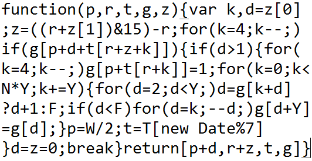
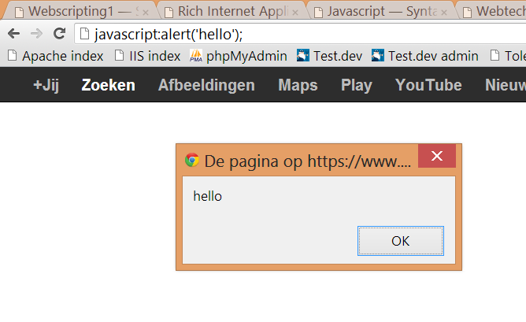

use the arrow keys to navigate; press space for slide overview

This code is actually the logic of a fully functional tetris game (without keyboard events and display). There's even a version smaller than the size of a tweet; you can play it here
Javascript can be so compact, there's a special contest for <1k programs. Some fine winners here, here and here. Don't forget to check the source code.
JAVASCRIPT SYNTAX
Introducing Javascript
Scripting languages (1)
Scripts were originally programs written to automate tasks which could alternatively be executed one-by-one by a human.
Differences from classic languages like Java, C#, C++...:
Codelines aren't compiled or linked but executed on the fly (just-in-time or JIT compilation). If there's an error halfway, the first half is still executed before the script halts.
Looser programming style: weak and dynamic typing, OO concepts are often different or totally absent
Syntactically, scripting languages can be rather 'special'
Scripting languages (2)
Biggest advantage of JIT compilation: better portability (text instead of machine code).
JIT comes with a penalty; Javascript is about 3 times slower than C++. Also, JIT makes decent intellisense and debugging much more difficult to implement.
Also, scripts are clear text, so harder to protect your work from other programmers
Quite a few scripting languages exist serverside (PHP, Python, ASP, C via CGI, Perl, Ruby...), but browsers understand only one language: Javascript.
Originally created by Netscape in 1995, originally named Mocha, later LiveScript and finally Javascript
Microsoft introduced Javascript support in IE3, renaming it to JScript to avoid trademark issues
Submitted to ECMA for standardization in 1996, resulting in ECMAScript (currently version 5.1). Watch out for the upcoming revolutionary Harmony version (work in progress).
Officially, JavaScript is maintained by Mozilla nowadays (version 1.8.5).
JavaScript Engines
Browsers have a built-in engine to interpret JavaScript
on Java-enabled systems with Rhino, an open source JavaScript engine developed by Mozilla and written in Java
embedded in pdf's, OpenOffice, in Chrome, Safari or Opera extensions, Photoshop plugins, desktop Widgets...
in this course we'll focus on browsers
JAVASCRIPT SYNTAX
Running Javascript
In the shell
From a shell, e.g. Windows Scripting Host:
WScript.StdOut.Write("Enter your name> ")
var name = WScript.StdIn.ReadLine()
WScript.StdOut.Write('Hello ' + name)
C:\Users\Rogier\Desktop>cscript test.js
Microsoft (R) Windows Script Host Version 5.8
Copyright (C) Microsoft Corporation. All rights reserved.
Enter your name> Rogier
Hello Rogier
C:\Users\Rogier\Desktop>
interaction with the Operating System differs from interaction with browsers, but the syntax (variables, loops, objects...) is the same
In Mac you can use jsc (JavaScriptCore), see jsc.zip for instructions
In the address bar
From the address bar of a browser:

may be useful to perform small tasks on an open webpage
can be saved as a bookmark: bookmarklets
With a bookmarklet
Example of a bookmarklet:
javascript:var x=document.getElementsByTagName("input");for(var i=0;i<x.length;i++) {if (x[i].type == 'checkbox') {x[i].checked=true;}}; alert('Done, all checkboxes are selected');
save this 'URL' in a bookmark on the bookmarks toolbar, open any webpage with checkboxes, click on the bookmarklet and see what happens...
In Chrome, after copy-pasting it to the address bar, manually add 'javascript:' at the beginning before dragging it to the bookmarks bar
You can put script blocks anywhere (<head> or <body>), but the best place for scripts is actually just before the end of <body>. This allows the HTML to load first, which creates a better user experience, especially when scripts are large. Browsers limit the number of parallel downloads of images, scripts, css..., and it is better to load the visible resources first and scripts last.
In HTML (2)
In HTML, inline:
<input type="button" value="I'm a button" onclick="alert('auch')" />
we won't use inline scripts, for the same reason we don't use inline styles
JAVASCRIPT SYNTAX
Input / output
Read from the shell
In Windows Scripting Host use StdOut.Write() and StdIn.ReadLine():
WScript.StdOut.Write('Enter your name>');
var name = WScript.StdIn.ReadLine(); // we'll get to variables later
WScript.StdOut.Write('Hello ' + name);
You can also use command line arguments:
var numArgs = WScript.arguments.length;
for (var i = 0; i < WScript.arguments.length; i++) {
WScript.StdOut.Write('Hello ' + WScript.arguments(i) + '\n');
}
C:\Users\Rogier\Desktop>cscript test.js An Bob
Microsoft (R) Windows Script Host Version 5.8
Copyright (C) Microsoft Corporation. All rights reserved.
Hello An
Hello Bob
C:\Users\Rogier\Desktop>
Read from the browser
In a browser you can use the browser window methods alert(), confirm() and prompt():
var name = window.prompt('Enter your name');
window.alert('Hello ' + name);
var doHighfive = window.confirm('High five?');
if (doHighfive) window.alert('High five!');
you can use or quotes, but single quotes are more common
you can the window object for these methods
ending semicolons , but we'll them anyway
Write to the browser
You can also write to the browser document:
document.write('<p>Hello Rogier</p>');
This can be used to hide your e-mail from bots:
<!DOCTYPE html>
<html>
<body>
<h1>Contact form</h1>
<script>
var part1 = "rogier.vanderlinde";
var part2 = "odisee.be";
var part3 = "send me a message";
document.write('<a href="mai' + 'lto:' + part1 + '@' + part2 + '">');
document.write(part3 + '</a>');
</script>
</body>
</html>
Interaction with HTML elements is for next week. For now we'll just focus on the Javascript syntax.
On the remaining slides, we'll use alert() and alikes for output because it is a little bit easier to demonstrate, but during the first lab session we'll first use the WScript methods to practice al little bit on the Javascript syntax alone.
And now...
JAVASCRIPT SYNTAX
Variables and constructors
Creating variables
A variable has a name and a value:
var quoteOfTheDay = 'Now have that tasty morning burger';
alert(quoteOfTheDay);
An unassigned variable has the value undefined:
var quoteOfTheDay;
alert(quoteOfTheDay);
Functions as variables
Functions are simply variables too, really:
var sayHello = function() { alert('hello') };
Execute a function with the () operator:
var sayHello = function() { alert('hello') };
sayHello(); // hello
You can assign them to other variables:
var sayHello = function() { alert('hello') };
var answer = sayHello;
answer(); // hello
In Java you can create variables as literals or through a constructor:
Integer num = 3; // is a literal
Integer num = new Integer(3); // is an object
This is the same in Javascript:
var num = 3; // is a literal
var num = new Number('3'); // is an object
var boo = true; // is a literal
var boo = new Boolean('hmmm...'); // is an object (parses to true)
var str = 'hello'; // is a literal
var str = new String('hello'); // is an object
Literals and constructors (2)
Some variables created with their constructor:
var num = new Number(3);
var boo = new Boolean('true');
var str = new String('hello');
var fun = new Function('nm', "alert('hello' + nm)");
var arr = new Array(1, 2, 3, 5, 8, 13);
var rex = new RegExp("^\d+$");
var obj = new Object(); obj.id = 2; obj.url = 'img/me.jpg'; obj.hidden = false;
var dat = new Date();
Literals and constructors (3)
Their literal counterpart:
var num = 3;
var boo = true;
var str = 'hello';
var fun = function(nm) { alert('hello' + nm) };
var arr = [1, 2, 3, 5, 8, 13];
var rex = /^\d+$/
var obj = { id: 2, url: 'img/me.jpg', hidden: false }
var dat = new Date(); // not for every constructor a literal exists!
use literals unless you have a specific reason to use a constructor
Undefined, NaN, Infinity
An existing but unassigned variable has the value and type undefined:
using equal operator is considered bad practice (in Javascript and in PHP)
JAVASCRIPT SYNTAX
Functions
Defining functions
Functions can be defined in three ways
// through constructor
var saySomethingSmart = new Function('quote', 'alert(quote)');
// through statement
function saySomethingSmart(quote) { alert(quote); };
// through expression
var saySomethingSmart = function(quote) { alert(quote); };
The last method is the preferred one.
Functions as arguments
As stated before, functions can be used as arguments:
var end = function() {
alert('ok, that was funny');
}
var speak = function(quote, callback) {
alert(quote);
callback();
}
speak('Behind every great man is a woman rolling her eyes. ', end);
Anonymous functions
You can even directly create and pass a function without declaring it first:
var speak = function(quote, callback) {
alert(quote);
callback();
}
speak('Behind every great man is a woman rolling her eyes. ', function() {
alert('ok, that was funny');
});
this is called an anonymous function
Passing by reference
As usual, non-primitives are passed by reference:
var me = {
name: "rogier",
numBeers: 0,
reportBeers: function() {
alert(this.name + ' had ' + this.numBeers + ' beers');
}
};
var giveBeer = function(person) {
person.numBeers++;
}
giveBeer(me);
giveBeer(me);
giveBeer(me);
me.reportBeers();
Passing by value
Primitives are passed by value, even if created as an object:
var myVar = new Number(3);
var tryToChange = function(num) {
num *= 2;
}
tryToChange(myVar);
alert(myVar); // still 3
Passing functions
Functions are passed by value too:
var gangstaGreet = function() {
alert('Yo H, u watch Pimp Ma Ride Uk, tha westwood aint a G');
}
var tryToChange = function(fn) {
fn = function() {
alert('hi, how are you');
}
}
tryToChange(gangstaGreet);
gangstaGreet(); // still unchanged
Passing an object instead
You can fix this by passing an object instead of a function:
var gangsta = {
name: 'Stank Ho',
greet : function(num) {
alert('Yo H, u watch Pimp Ma Ride Uk, tha westwood aint a G');
}
}
var tryToEducate = function(person) {
person.greet = function(num) {
alert('hi, I\m ' + this.name + ', how are you');
}
alert('...education ok...');
}
gangsta.greet();
tryToEducate(gangsta);
gangsta.greet(); // ok now
Arguments array (1)
Say you have a function that should work given any number of parameters
var sum = function(a, b, c, d, e) {
return a + b + c + d + e
};
alert(sum(1,2)); // NaN (!)
alert(sum(1,2,3,4,5)); // 15
alert(sum(1,2,3,4,5,6)); // What now?
You can tell by just looking at it: it's bound to fail
Arguments array (2)
Luckily we can leave out the arguments and use the arguments property:
var sum = function() {
var total = 0;
for (var i = 0, len = arguments.length; i < len; i++) {
total += parseInt(arguments[i]);
}
return total;
};
alert(sum(1,2));
alert(sum(1,2,3,4,5));
alert(sum(1,2,3,4,5,6));
Single object parameter
Another nice pattern is using an object as parameter, and use its properties:
Javascript has a whole different approach to OO and doesn't offer things like access modifiers or inheritance. You can however create a constructor by using a function:
// build constructor
var Car = function(make, year, started) {
this.make = make;
this.year = year;
this.started = started;
this.describe = function() {
alert(this.year + ' ' + this.make + (this.started ? ': engine running' : ': engine not running'));
}
this.start = function() {
this.started = true;
this.describe();
}
}
// create the cars
var myCar = new Car('Mercury Bobcat', 1978, false);
var yourCar = new Car('Fiat Panda', 2002, false);
// now start the cars
myCar.start();
yourCar.start();
// verify its type and constructor
alert(typeof myCar == 'object');
alert(myCar instanceof Car);
Prototype property
You can extend an existing constructor with the prototype property:
// extend String
String.prototype.ltrimUnderscores = function() {
return this.replace(/^_+/, "");
}
// test our new String function
alert('____test____'.ltrimUnderscores());
// extend Array
Array.prototype.contains = function(obj) {
for (var i = 0; i < this.length; i++) {
if (this[i] === obj) return true;
}
return false;
}
// test our new Array function
var arr = ['aap', 'noot', 'mies'];
alert(arr.contains('wim'));
alert(arr.contains('noot'));
this is considered bad practice and not allowed in strict mode (see further)
Lego with Javascript
Javascript is a bit like lego. You can also add arbitrary new properties to existing objects too:
// create Person constructor
var Person = function(nm) {
this.name = nm;
}
// create persons
var person1 = new Person('Alice');
var person2 = new Person('Bob');
// create feeding program
var giveFood = function(person) {
if (person.isServed) {
alert('you already had your portion, ' + person.name);
return;
}
alert('here is your portion, ' + person.name);
person.isServed = true; // ← add new property
}
// serve
giveFood(person1);
giveFood(person2);
giveFood(person1);
More lego with Javascript
You can actually attach anything to anything (except boolean, string and number literals)
// attaching a text to a primitive; doesn't work
var test1 = 1;
test1.someText = 'hello 1';
alert(test1.someText); // undefined
// attaching a text to a Number
var test2 = new Number(1);
test2.someText = 'hello';
alert(test2.someText); // hello
// attaching a function to an array
var test3 = [1, 3, 7];
test3.count = function() {
alert(this.length);
};
test3.count(); // 3
// attaching a number to a function
var test4 = new function() {};
test4.someNumber = 99;
alert(test4.someNumber); // 99
// attaching a number to an array to a function to an object
var test5 = {};
test5.someFunction = function(){};
test5.someFunction.someArray = [];
test5.someFunction.someArray.someNumber = 100;
alert(test5.someFunction.someArray.someNumber); // 100
Namespaces (1)
A good practice is namespacing your code. This is easy done by creating a root object, and adding your code as properties. An example for a Javascript library:
var ROGIER = new Object();
ROGIER.navigationFunctions = new Object();
ROGIER.navigationFunctions.getScrollX = function() {...}
ROGIER.navigationFunctions.getScrollY = function() {...}
ROGIER.navigationFunctions.getByClass = function(...) {...}
ROGIER.cookieFunctions = new Object();
ROGIER.cookieFunctions.setCookie = function(...) {...}
ROGIER.cookieFunctions.getCookie = function(...) {...}
ROGIER.cookieFunctions.delCookie = function(...) {...}
Name spaces (2)
A namespacing example for a web application:
// main application
myApplication = new Object();
myApplication.init = function() {
myApplication.myModule1.init();
myApplication.myModule2.init();
}
// module 1
myApplication.myModule1 = {
init: function() {
// init module 1 here
}
// some more code here
}
// module 2
myApplication.myModule2 = {
init: function() {
// init module 2 here
}
// some more code here
}
JAVASCRIPT SYNTAX
Scope
Control structures
The scope is the environment in which a variable exist. Control structures like iterations or selections do not define a new scope:
var i = 100; // outer foo
for (var i = 0; i < 10; i++) {
// i points to outer i
}
alert(i); // i has changed to 10
Var keyword
Functions do define a new scope, but only for variables with the var keyword:
var var1 = 'kot kot kedei'; // global
var foo = function() {
var var2 = 'kukeleku'; // local
var3 = 'toktok'; // global
alert('foo says ' + var1);
alert('foo says ' + var2);
alert('foo says ' + var3);
};
foo();
alert('global says ' + var1);
// alert('global says ' + var2); will fail
alert('global says ' + var3);
using global variables is a bad programming practice (and forbidden in the Strict Mode introduced in ECMAScript 5); always use the var keyword
Self invoking anon. functions
You can wrap a piece of code in a new scope with a self invoking anonymous function:
(function() {
var number1 = 5;
var number2 = 7;
alert('the sum of ' + number1 + ' and ' + number2 + ' is: ' + (number1 + number2));
alert('variable "number2" is accessible inside the function; its type is ' + typeof number1);
})();
alert('variable "number1" is not accessible outside the function; its type is ' + typeof number1);
this encapsulates your variables, hidden for the outside world (good practice!)
don't forget the var keyword, or your variable becomes global (try it out above)
we will use this structure a lot
Closures
A nasty consequence of the Javascript scoping model is closures:
var obj = {};
// loop creating three new functions
for (var i = 0; i < 3; i++) {
obj['testFunction' + i] = function() {
alert(i);
}
}
// test the functions
obj.testFunction0(); // alerts 3!
obj.testFunction1(); // alerts 3!
obj.testFunction2(); // alerts 3!
the i variable belongs to the initTest function scope, not the for
it keeps to exist with its final value 3 after the loop exits
it is shared and has the same value for the three created function
Closures – solution 1
A solution is to move the function definition outside the loop:
var obj = {};
// intermediate function
function addFunction(i, obj) {
obj['testFunction' + i] = function() {
alert(i);
}
}
// loop creating three new functions
for (var i = 0; i < 3; i++) {
addFunction(i, obj);
}
// test the functions
obj.testFunction0(); // alerts 0
obj.testFunction1(); // alerts 1
obj.testFunction2(); // alerts 2
Closures – solution 2
Another solution is to encapsulate the function definition, and copy the i variable to a new encapsulated variable j:
var obj = {};
// encapsulated loop
for (var i = 0; i < 3; i++) {
(function() {
var j = i;
obj['testFunction' + j] = function() {
alert(j);
}
})();
}
// test the functions
obj.testFunction0(); // alerts 0
obj.testFunction1(); // alerts 1
obj.testFunction2(); // alerts 2
Closures
Another closure example:
var arrObjects = [{name: 'Alice'}, {name: 'Bob'}, {name: 'Clive'}];
// loop creating three new functions
for (var i = 0; i < arrObjects.length; i++) {
arrObjects[i].sayHello = function() {
alert('hi, my name is ' + arrObjects[i].name);
}
}
// Javascript error!
arrObjects[1].sayHello();
function executes alert(arrObjects[i].name)
i is 3, so function executes alert(arrObjects[3].name)
arrObjects[3] does not exist, so an error is thrown
Closures – solution 3
You can often prevent using i by using this instead, which refers to the object calling the function
var arrObjects = [{name: 'Alice'}, {name: 'Bob'}, {name: 'Clive'}];
// loop creating three new functions
for (var i = 0; i < arrObjects.length; i++) {
arrObjects[i].sayHello = function() {
alert('hi, my name is ' + this.name);
}
}
// correctly says 'hi, my name is Bob'
arrObjects[1].sayHello();
just remember: never use i in a function defined in a loop!
JAVASCRIPT SYNTAX
Quick syntax recap
Selections
// if - else
var badGrades = true;
if (badGrades) {
alert('House arrest for two weeks');
} else {
alert('No house arrest');
}
// switch - case
var age = 10, lifeState;
switch (age) {
case 10: lifeState = 'Young'; break;
case 60: lifeState = 'Old'; break;
default: lifeState = 'unknown'; break;
}
alert(lifeState);
For iterations (1)
// loop over array
var forrestFriends = ['Bubba', 'Lieutenant Dan'];
for (var i = 0; i < forrestFriends.length; i++) {
alert(forrestFriends[i]);
}
// loop over object
var forrest = {
firstName : 'Forrest',
lastName : 'Gump'
};
for (var prop in forrest) {
alert(prop + ' = ' + forrest[prop]);
}
For iterations (2)
Beware that for ... in iterates keys, not values:
// what will be the result?
var friends = ['dan', 'anthony', 'pavel'];
for (var friend in friends) {
alert(name);
}
While iterations
// while
var count = 5;
while (count > 0) {
console.log(count);
count--;
}
// do - while
var count = 5;
do {
console.log(count);
count--;
} while (count > 0);
// Tip: retry this example with count = 0 as starting value
Break
Break jumps to the end of the statement & aborts current task
Valid inside switch, for, for-in, while, and do-while
Example
for (var x = 1; x <= 5; x++) {
var y = 1;
while (y <= 7) {
if (y == 5) { break; }
console.log(x + '-' + y);
y++;
}
}
Break & label
To break the outer loop, one can make use of a label
myForLoop:
for (var x = 1; x <= 5; x++) {
var y = 1;
while (y <= 7) {
if (y == 5) { break myForLoop; }
console.log(x + '-' + y);
y++;
}
}
if you find yourself using this, you might rethink your code style
Continue
Continue jumps back to start of statement and continues with next item
Valid inside for, for-in, while, and do-while
Example
for (var x = 1; x <= 5; x++) {
for (var y = 1; y <= 7; y++) {
if (y == 5) continue;
console.log(x + '-' + y);
}
}
Continue & label
Using a label is also possible
myForLoop:
for (var x = 1; x <= 5; x++) {
for (var y = 1; y <= 7; y++) {
if (y == 5) { continue myForLoop; }
console.log(x + '-' + y);
}
}
In this example you get the same result as the first break example
each block must have a description (even if it's simple); make your story complete
Indentation
Code analysis tools like JSHint suggest indentation with 4 spaces, no tabs (exception: 2 spaces for .json files, see later)
var test = function() {
....var someVar = 'some value';
....for (var i = 0; i < 10; i++) {
........// do something here
........// do something here too
....}
};
for (var x = 0; x < 10; x++) {
// ...
}
var hasItems = arrItems.length > 0 ? true : false;
Spaces are put after keywords to distinguish with functions.
Semicolons
Put semicolons:
after each statement
after an assignment statement var varName = {...};
not after all other }
Examples:
var test1 = function() {
console.log('test1 function executing'); // statement
}; // assignment statement
function test2() {
console.log('test2 function executing'); // statement
} // don't put one here!
if (x && x === 9) {
console.log('x is nine'); // statement
} // don't put one here!
Curly braces (1)
Rules (apply to block statements only, not to object literals):
always use them when optional
don't put them on one line
Examples:
if (some_condition)
...
else
...
if (some_condition) { ... }
if (some_condition) {
...
} else {
...
}
if (some_condition) {
...
}
note: to save space these rules do not apply to these slides
Curly braces (2)
Rules (apply to block statements only, not to object literals):
no Javascript programmer will put braces on separate lines
Examples:
if (some_condition)
{
...
}
else
{
...
}
if (some_condition) {
...
} else {
...
}
Identifiers
Conventions:
use camelCase for all identifiers
exception: capitalize constructor functions, e.g. 'new F()'
Examples:
var user_name = 'Rogier'; // should be userName
var car = new function(make, color) { // should be Car
this.make = make;
this.color = color;
this.EngineStarted = false; // should be engineStarted
// ...
}
Comparison
Conventions:
avoid using == and != (check values, force cast if necessary)
New since ECMAScript 5; ignored in earlier versions
Turns Javascript in a more strict, cleaner mode:
prohibits some syntax that is likely an error
makes it easier for Javascript engines to optimize code
Examples:
'use strict';
var somevariable;
someVariable = 7; // might be typo; new variable not allowed without 'var'
var sum = function(a, a, c) { // possible mistake; duplicates not allowed
// ...
}
Use strict (2)
Should be first line of the script or function
Applies to the whole function or script
This is a bad idea:
'use strict';
var function1 = function() {
// ...
}
var function2 = function() {
// ...
}
// ...
it would also apply to any other included code, possibly breaking it